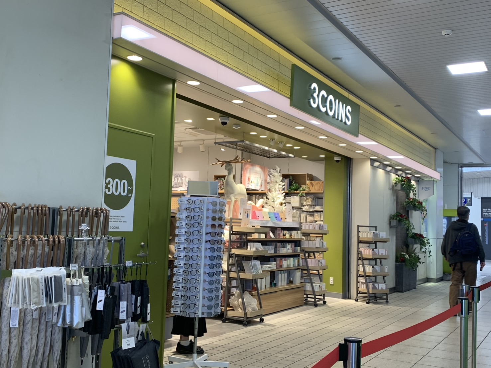
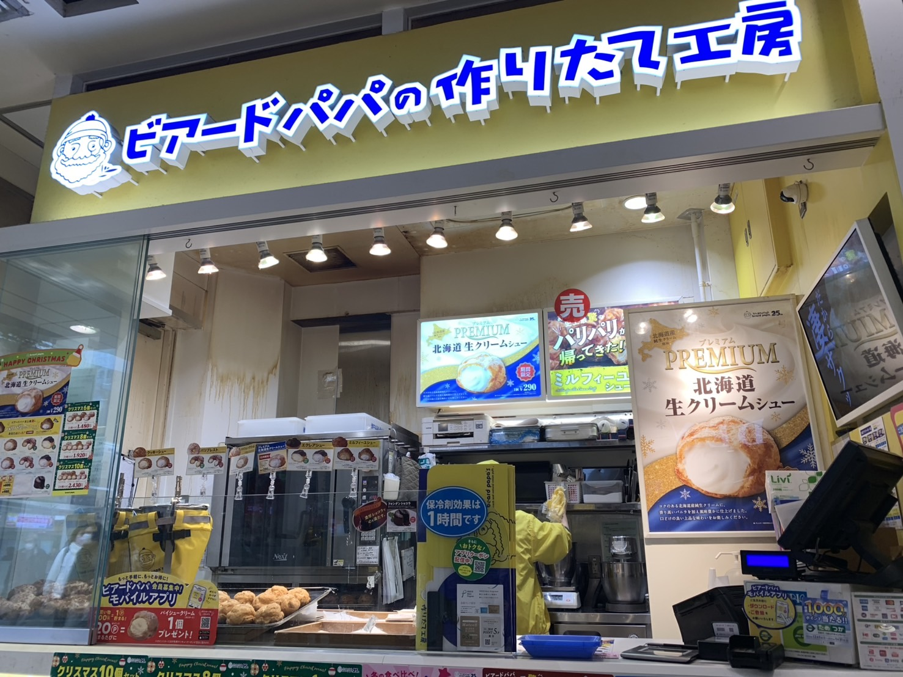
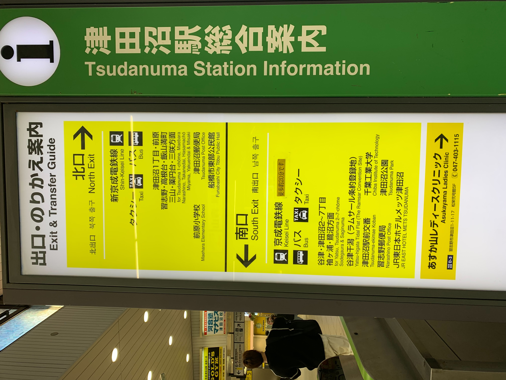
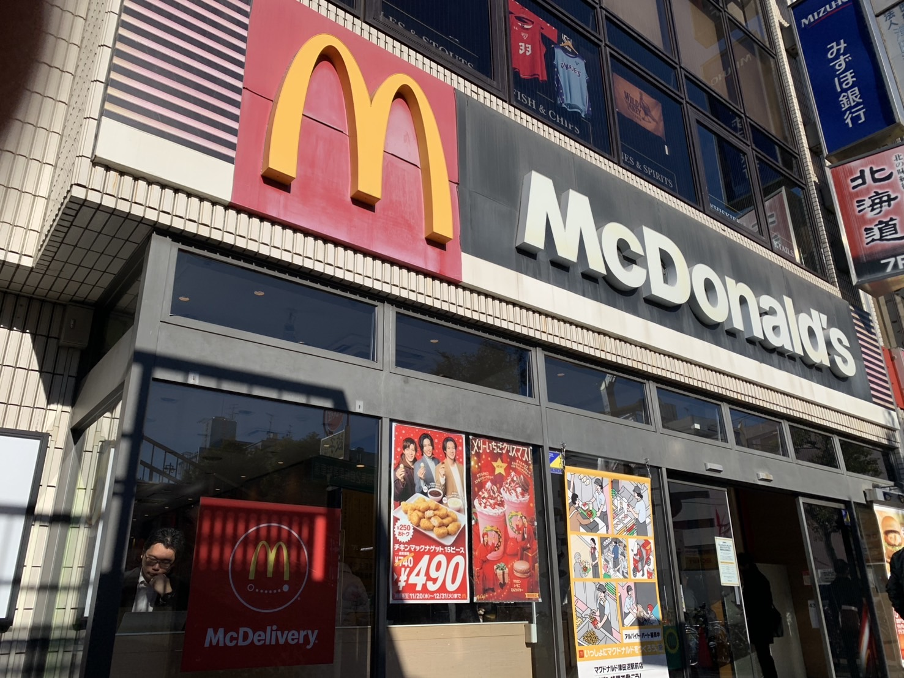
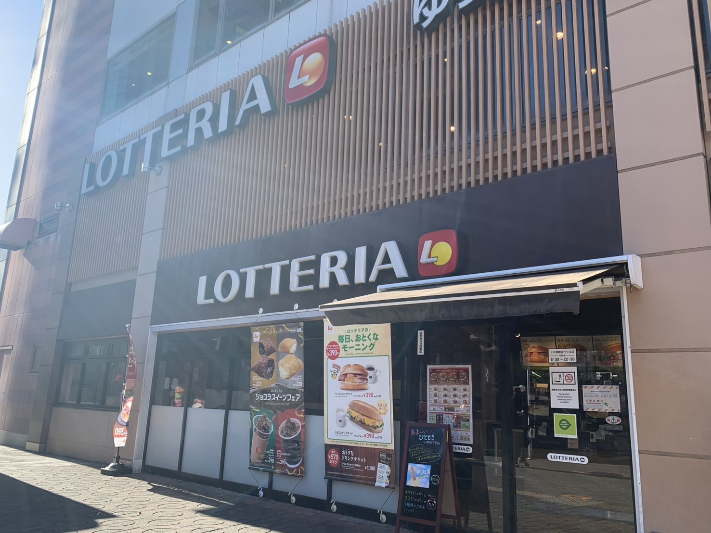
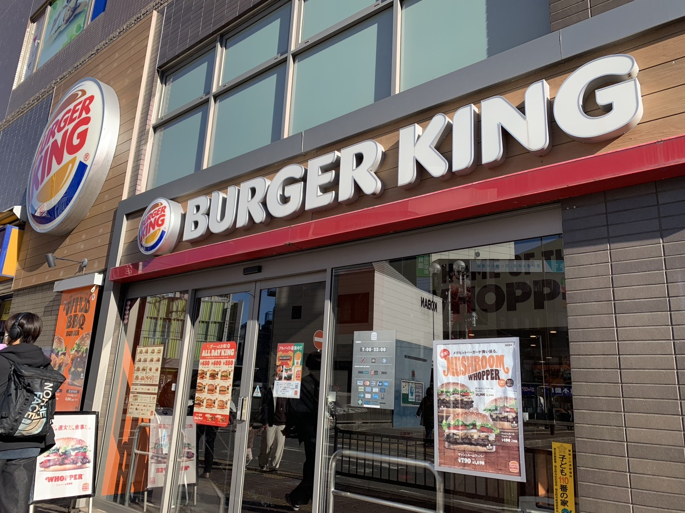
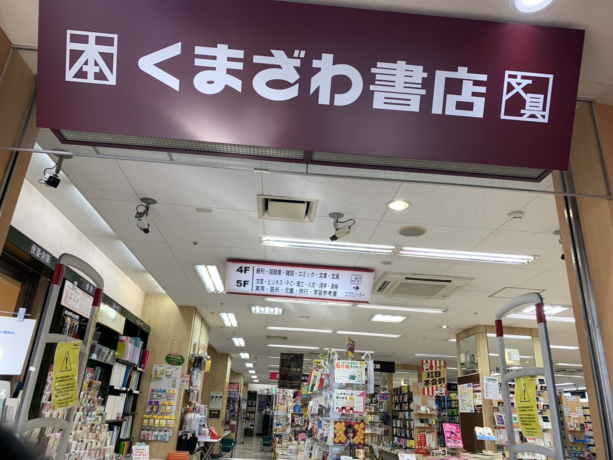

1. 総武・横須賀線（快速）
- 東京や品川方面へのアクセスが便利で、津田沼駅から東京駅まで約28分で到着します。
- 始発電車も運行しており、朝の通勤にも便利です。
- 多くの社会人や学生にとって、住みやすい街として人気があります。
路線図

2. 中央・総武線（各駅停車）
- 各駅停車のため、途中駅での乗降が可能です。
- 千葉方面に向かう便も充実しており、広範囲にわたる移動が便利です。
- 全車両が通勤や通学に便利な設備を備えており、快適な乗車が可能です。
路線図

駅内・周辺の施設・アクセス
- 津田沼駅内には、様々な施設が整備されており、買い物や軽食が楽しめます。
- 例えば、3COINSやビアードパパが駅構内にあり、手軽に立ち寄ることができます。
-


- また、津田沼駅は北口と南口があります。

- 北口にはマクドナルドやロッテリアがあり、ファストフードが充実しています。
マクドナルド 津田沼店
マクドナルド津田沼店では、手軽に美味しいハンバーガーやサイドメニュー、ドリンクを楽しむことができます。駅から徒歩圏内なので、通勤や通学の途中に気軽に立ち寄れる便利な店舗です。
お買い物の後や、友人との集まりにも最適なスポットです。ぜひご利用ください。

| 住所 | 千葉県習志野市津田沼1-1-1 |
|---|---|
| 電話番号 | 047-1234-5678 |
| 営業時間 | 24時間営業 |
| 定休日 | 年中無休 |
| アクセス | JR津田沼駅 北口より徒歩2分 |
| 座席 | 80席（カウンター席、テーブル席あり） |
ロッテリア 津田沼店
ロッテリア津田沼店では、ジューシーなハンバーガーやフライドポテト、ドリンクなどを提供しています。駅からも近いため、忙しい日常の中で手軽に食事を楽しむことができます。
店内は広々としており、落ち着いた雰囲気で食事ができるので、友達や家族と一緒に訪れるのにぴったりです。

| 住所 | 千葉県習志野市津田沼2-2-2 |
|---|---|
| 電話番号 | 047-9876-5432 |
| 営業時間 | 10:00～22:00 |
| 定休日 | 年中無休 |
| アクセス | JR津田沼駅 北口より徒歩3分 |
| 座席 | 60席（カウンター席、テーブル席あり） |
バーガーキング 津田沼店
バーガーキング津田沼店では、グリルした美味しいワッパーやフライドポテト、オリジナルドリンクを楽しめます。ジューシーでボリューム満点なハンバーガーが特徴です。
店内はシンプルで開放感があり、落ち着いた雰囲気で食事ができます。テイクアウトもできるので、忙しい時でも気軽に立ち寄れます。

| 住所 | 千葉県習志野市津田沼1-5-10 |
|---|---|
| 電話番号 | 047-9876-4321 |
| 営業時間 | 10:00～22:00 |
| 定休日 | 年中無休 |
| アクセス | JR津田沼駅 北口より徒歩5分 |
| 座席 | 50席（カウンター席、テーブル席あり） |
デニーズ 津田沼店
デニーズ津田沼店では、幅広いメニューを楽しめます。朝食からランチ、ディナーまで、誰でも満足できる料理を提供しています。家庭的で温かみのある店内で、友人や家族とゆっくり過ごせます。
特に人気のメニューは、ハンバーグやオムライス、パスタ、デザートなど、豊富な選択肢が揃っています。また、カフェスペースもあるので、コーヒーやスイーツも楽しめます。

| 住所 | 千葉県習志野市津田沼1-2-8 |
|---|---|
| 電話番号 | 047-1234-5678 |
| 営業時間 | 24時間営業 |
| 定休日 | 年中無休 |
| アクセス | JR津田沼駅 南口より徒歩3分 |
| 座席 | 80席（カウンター席、テーブル席、個室あり） |
くまざわ書店 津田沼店
くまざわ書店津田沼店では、最新の書籍から人気のコミック、雑誌まで、さまざまなジャンルの本を取り揃えています。落ち着いた雰囲気の店内で、本をじっくりと選ぶことができ、読書好きにはぴったりの場所です。
店内にはカフェスペースもあり、読書しながらゆったりと過ごせます。また、ギフトや文房具などの取り扱いもあり、プレゼント選びにも便利です。

| 住所 | 千葉県習志野市津田沼1-3-4 |
|---|---|
| 電話番号 | 047-1111-2222 |
| 営業時間 | 10:00～21:00 |
| 定休日 | 年中無休 |
| アクセス | JR津田沼駅 南口より徒歩2分 |
| 座席 | なし（カフェスペースあり） |